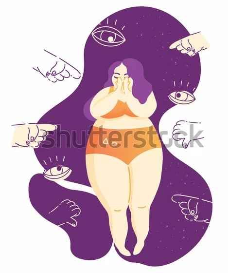
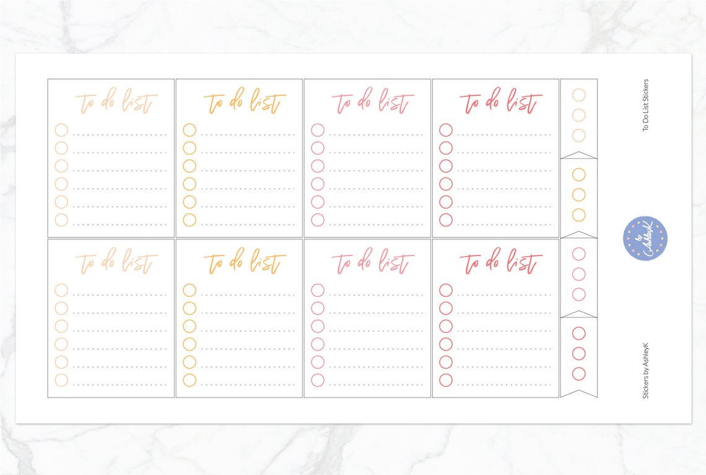
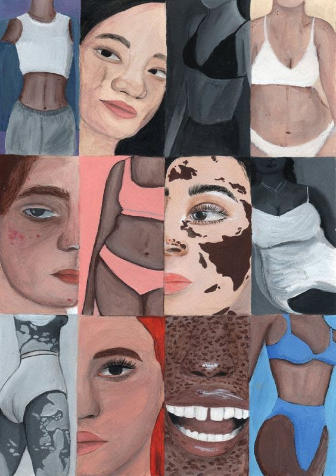

"Tôi ghét cơ thể của mình":
Phải làm gì nếu bạn như vậy
Viết bởi: Ariane Resnick, CNC
Review bởi: Rachel Goldman, PhD, FTOS
➸➸➸➸➸➸➸➸➸➸➸➸➸
💭 Làm thế nào để gia tăng tình yêu với cơ thể của bạn?

઼ Cảm thấy bế tắc và tuyệt vọng về cơ thể là điều phổ biến, và đó không phải nơi để câu chuyện của bạn không thể cứu vãn. Có rất nhiều điều bạn có thể làm để bắt đầu hành trình yêu thương, hoặc ít nhất là đánh giá cao và chấp nhận cơ thể của bạn.
઼ Điều quan trọng là phải có những cảm nhận tích cực về cơ thể của chúng ta bởi chỉ có những cảm giác tiêu cực về một vấn đề mà chúng ta không thể loại bỏ làm ta cảm thấy căng thẳng và buồn bã, đây không phải là một cách hiệu quả để vượt qua cuộc sống.
઼ Dời đến một không gian của tình yêu thương, hoặc ít nhất chấp nhận cơ thể của mình sẽ giúp bạn ít căng thẳng hơn trong cuộc sống. Nó cũng có thể giúp bạn trở thành một người hạnh phúc hơn.
➸➸➸➸➸➸➸➸➸➸➸➸➸
1. Lập một danh sách những gì cơ thể bạn có thể làm

Đôi khi chúng ta bị cuốn vào cảm giác như là cơ thể của chúng ta không đủ tốt, chúng ta hoàn toàn quên mất tất cả những điều tuyệt vời mà cơ thể chúng ta có thể làm được. Khi bạn đang trong tình trạng cảm thấy căm ghét cơ thể của mình, có thể rất hữu ích nếu bạn tìm hiểu chi tiết những cách thức mà cơ thể bạn đang làm tốt. Điều này sẽ giúp bạn cảm thấy tự hào về cơ thể mình, và nhận ra cơ thể đã làm điều tốt nhất có thể.
➸➸➸➸➸➸➸➸➸➸➸➸➸
2. Một số câu hỏi cho bản thân để bắt đầu bao gồm:
- Bạn có đang thở không? Câu trả lời cho điều này dường như là có, bởi bạn còn sống và có ý thức. Bạn có nhận ra đó là một kỳ tích đáng kinh ngạc không? Phổi của bạn hấp thụ khí oxi và thải ra khí cacbonic, đó là một điều tuyệt vời có thể làm. Cơ thể của bạn làm mọi thứ trong khả năng của nó để giữ cho bạn sống ngay bây giờ. Cơ thể ở đây vì bạn, giữ cho bạn sống. Không có điều gì trên thế giới này có chức năng duy nhất giữ bạn lại với cuộc sống, và đó là điều phải cảm ơn.
- Mắt bạn có nhìn thấy không? Nếu có, điều này thật tuyệt. Nếu không, bạn đã học cách nào để bù đắp cho việc không có giác quan này? Đó là một thành tựu to lớn nếu bạn có thể sử dụng cơ thể mà không cần giác quan đó.
- Đôi chân bạn có thể đi không? Thậm chí là chạy? Nếu có, điều này thật tuyệt. Nếu không, bạn đã làm cách nào để bù đắp cho việc không có khả năng đi lại? Đó là một thành tựu to lớn nếu bạn có thể di chuyển trong cuộc sống hằng ngày trong cơ thể bạn mà không thể làm điều đó.
Có nhiều câu hỏi hơn để bạn có thể hỏi bản thân, nhưng ấy là những câu hỏi cực kỳ đơn giản để bắt đầu hành trình này. Chúng ta càng đánh giá cao những điều cơ thể làm cho chúng ta, chúng ta càng dễ dàng chấp nhận chúng như chúng vốn có.
➸➸➸➸➸➸➸➸➸➸➸➸➸
3. Thực hành Body Neutrality
઼ Body neutrality là một khái niệm cơ bản về việc chấp nhận cơ thể của bạn và đánh giá cao những điều nó có thể làm, bất kể nó như thế nào hoặc chức năng của nó ra sao. Luyện tập nó có thể liên quan đến mọi thứ từ việc ăn uống hợp lý hơn và không đẩy bản thân mình vào tập luyện thái quá.
઼ Luyện tập Body neutrality có rất nhiều lợi ích đối với sức khỏe tinh thần. Nó dẫn đến việc có nhiều sự đồng cảm hơn và ít phán xét đến những người khác, và giảm mức độ căng thẳng.
Body Neutrality gồm có các thực hành: Xem thêm tại How to Practice Body Neutrality
✔ Self-Talk: Nhận thức rằng cơ thể đang vận hành tốt hoặc không tốt
✔ Self-Love: Thực hành các bài thực hành yêu bản thân
✔ Mindful: Ý thức 'ở đây & bây giờ'
઼ Đó không phải một việc có thể làm nhanh chóng, nhưng nó là một khoản đầu tư thời gian đáng giá bởi những lợi ích này. Bạn có thể bắt đầu bằng cách thử nhiều về Body neutrality cùng một lúc, hoặc bắt đầu với chỉ một bài trong một thời gian.
➸➸➸➸➸➸➸➸➸➸➸➸➸
4. Làm những điều tốt đẹp cho cơ thể của bạn
઼ Với tất cả những điều cơ thể chúng ta làm cho chúng ta, thật lạ là chúng ta lại làm rất ít cho chúng. Cơ thể của chúng ta bận rộn đưa chúng ta đến những vị trí và hoạt động, và chúng ta thường không làm gì để cảm ơn cơ thể.
઼ Cảm ơn cơ thể của chúng ta vì tất cả những gì cơ thể làm không hề đắt đỏ hay phức tạp. Bạn có thể cảm ơn cơ thể mình bằng cách tắm nước ấm. Bạn có thể thư giãn một buổi tối thay vì giao tiếp xã hội khi bạn cảm thấy mệt mỏi. Bạn có thể mua một loại kem dưỡng da mới và mát xa cả tay và chân trong khi bạn dưỡng ẩm. Bất kể điều gì bạn có thể làm để tặng cơ thể tình yêu mà nó xứng đáng là điều tuyệt vời.
➸➸➸➸➸➸➸➸➸➸➸➸➸
5. Tạo ranh giới lành mạnh khi thảo luận về cơ thể

઼ Trong một thế giới mà các bình luận về cơ thể tràn lan, bạn có thể bảo vệ mình khỏi bị kích động bằng cách thiết lập ranh giới rõ ràng với bạn bè và gia đình. Điều đó có thể liên quan đến việc cho họ biết chủ đề giao tiếp nào thì thoải mái cho bạn, chủ đề nào không.
઼ Nó có nghĩa là nói cho họ biết rằng bạn không muốn ngoại hình của bạn bị đưa ra bình luận. Hoặc, gửi đến họ thông tin làm cách nào để thảo luận về cơ thể theo những phương thức không có hại.
઼ Dù bạn chọn gì, đó là một công việc cho phép cho bạn để chủ động hơn với cơ thể mình.
➸➸➸➸➸➸➸➸➸➸➸➸➸
6. Luyện tập những hoạt động giảm thiểu căng thẳng
઼ Giảm thiểu căng thẳng là một trong những điều tốt chúng ta có thể làm cho sức khỏe tinh thần của mình. Có thể không thể giảm bớt hoặc loại bỏ căng thẳng, nhưng chúng ta có thể chọn cách đối phó với chúng. Thực hiện một hoạt động giảm căng thẳng, bất kể là bài tập thở hay đi dạo, đều tốt cho mọi phương diện của chúng ta.
઼ Thậm chí chỉ một vài phút ngắn ngủi cũng có thể ảnh hưởng đến bạn trong vài giờ sau đó. Luyện tập các hoạt động giảm thiểu căng thẳng cũng có thể giúp bạn suy nghĩ hợp lý hơn về cơ thể của mình, và hoạt động từ một khoảng tinh thần ít buồn phiền hơn.
➸➸➸➸➸➸➸➸➸➸➸➸➸
Thông tin bài đăng:
Nguồn bài viết gốc: 'I Hate My Body': What to Do If You Feel This Way
Nguồn bản dịch: "Tôi Ghét Cơ Thể Của Mình": Phải Làm Gì Nếu Bạn Cảm Thấy Như Vậy"
Biên tập lại: Nguyễn Thị Tuyết Mai - Daijoubu Team